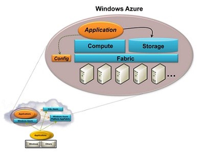
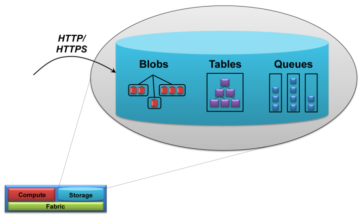
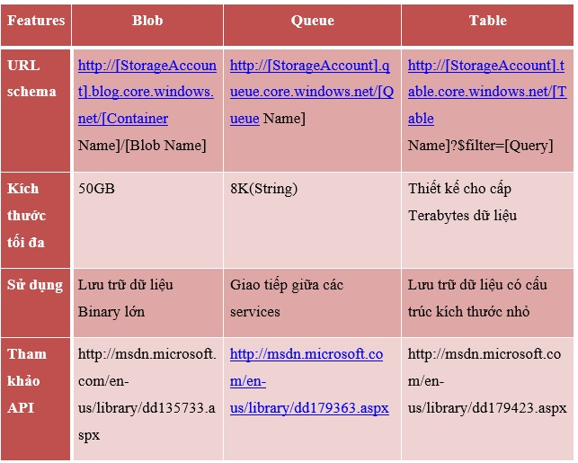
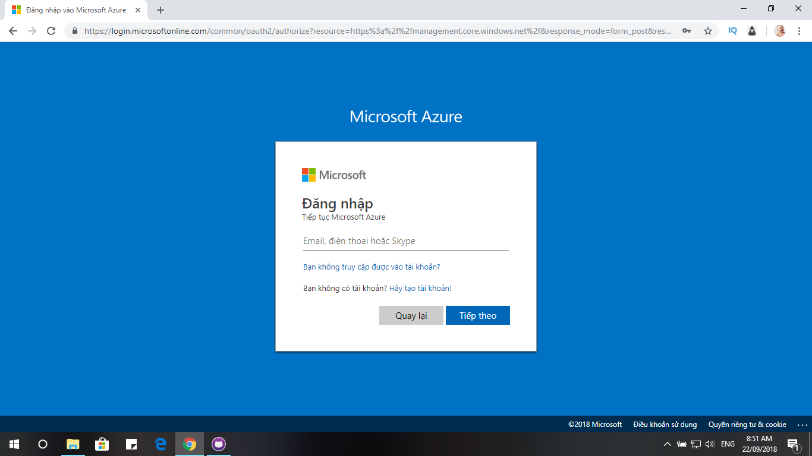
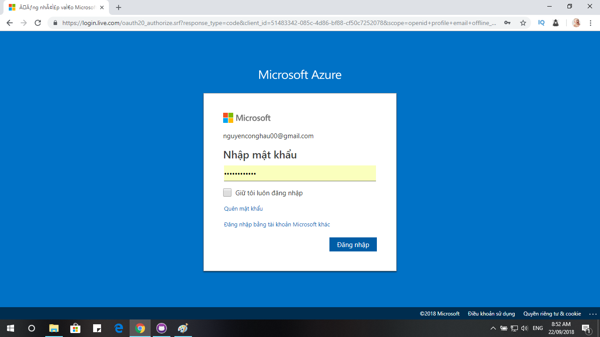
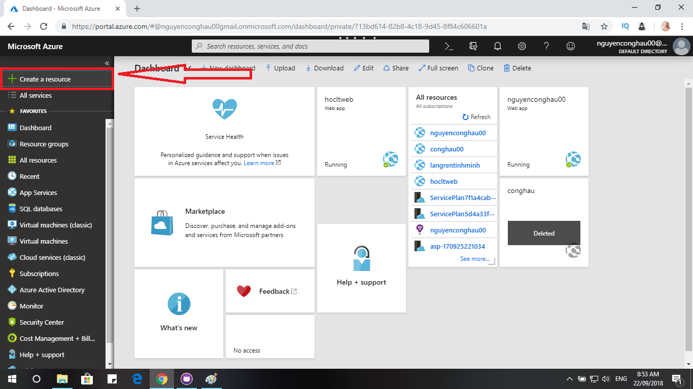
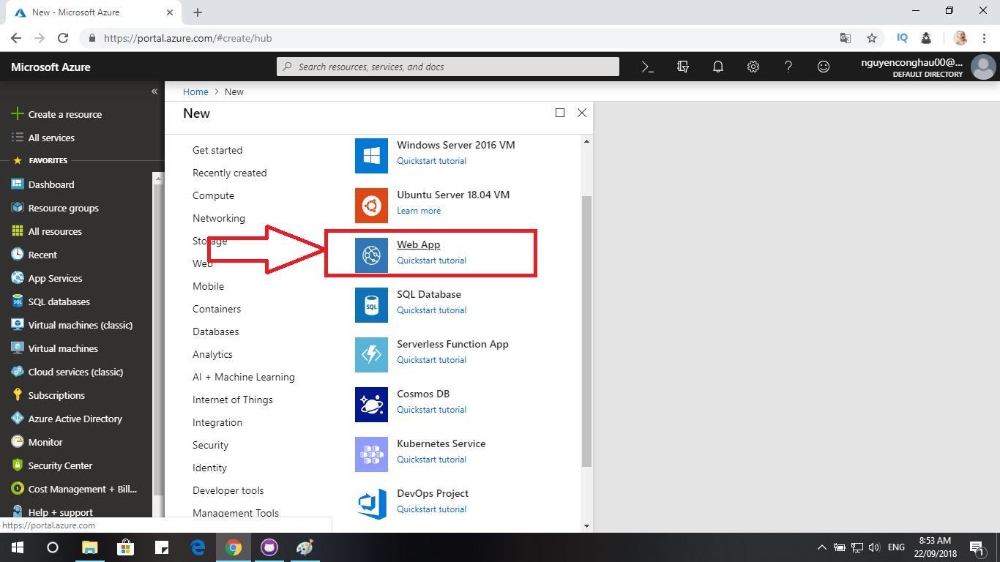
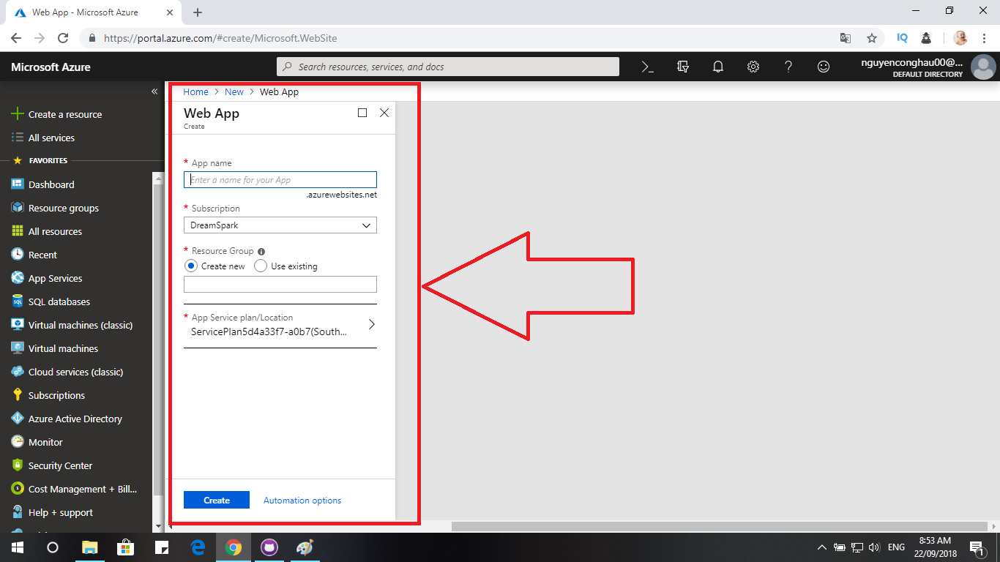

Microsoft Azure là một nền tảng ứng dụng cho công nghệ điện toán đám mây. Bạn có thể sử dụng nền tảng này theo nhiều cách khác nhau. Chẳng hạn, bạn có thể sử dụng Microsoft Azure để xây dựng các ứng dụng web để chạy hoặc lưu trữ dữ liệu trong Microsoft Azure DataCenters. Ngoài ra, chúng ta có thể dùng Microsoft Azure để tạo các máy ảo cho phát triển và kiểm thử phần mềm hoặc chạy SharePoints hay các nền tảng ứng dụng khác.
Dịch vụ tính toán Microsoft Azure có thể chạy nhiều kiểu ứng dụng khác nhau. Mục tiêu chính của kiến trúc này, là hỗ trợ các ứng dụng có lượng người sử dụng truy cập đồng thời cực lớn. Có thể đạt được mục tiêu này bằng cách tăng cường sử dụng nhiều máy chủ lớn hơn. Nhưng thay vì như vậy, Microsoft Azure được thiết kế để hỗ trợ ứng dụng tốt nhất, chạy nhiều bản sao của cùng một mã nguồn trên nhiều máy chủ khác nhau. Để đạt được điều này, ứng dụng Microsoft Azure có thể có nhiều thực thể (instance), thực thể được thực thi trên một máy ảo.
Để chạy một ứng dụng, lập trình viên truy cập Microsoft Azure portal thông qua trình duyệt, đăng nhập với một Windows Live ID. Sau đó, lập trình viên tạo ra một tài khoản hosting để chạy ứng dụng, hoặc một tài khoản lưu trữ (storage) để lưu trữ dữ liệu, hoặc cả hai. Một khi lập trình viên có tài khoản hosting thì có thể upload ứng dụng của mình, chỉ ra bao nhiêu thực thể mà ứng dụng cần, cũng như cấu hình của máy ảo. Microsoft Azure sẽ tạo ra các máy ảo tương ứng để chạy ứng dụng. Lập trình viên, chỉ có thể thấy được trạng trái của ứng dụng được triển khai, thông qua Microsoft Azure portal. Một khi ứng dụng được triển khai, nó hoàn toàn được quản lý bởi Windows Azure. Điều duy nhất bạn phải làm là, chỉ ra các thông số sử dụng cho ứng dụng, còn lại, việc triển khai, tính mở rộng, tính sẵn sàng, nâng cấp, chuẩn bị phần cứng server đều được thực hiện bởi Microsoft Azure cho các ứng dụng đám mây.
Máy ảo của của Microsoft Azure gồm 3 thành phần:
Lập trình viên có thể chỉ sử dụng thực thể Web role, hay Worker role, hoặc kết hợp cả hai để tạo ra ứng dụng Windows Azure. Có thể sử dụng Microsoft Azure portal để thay đổi số lượng thực thể của Web role, Worker role tùy theo yêu cầu của ứng dụng.
Cơ sở dữ liệu SQL Azure cung cấp một hệ thống quản lí cơ sở dữ liệu dựa trên đám mây (DBMS). Công nghệ này cho phép ứng dụng On-Premise và đám mây lưu trữ dữ liệu quan hệ và những kiểu dữ liệu khác trên các máy chủ trong trung tâm dữ liệu Microsoft. Cũng như các công nghệ đám mây khác, tổ chức chỉ trả cho những gì họ sử dụng. Sử dụng dữ liệu đám mây cho phép chuyển đổi những chi phí vốn như: phần cứng, phần mềm hệ thống quản lí lưu trữ, vào chi phí điều hành.
Cơ sở dữ liệu SQL Azure được xây dựng trên Microsoft SQL Server. Cho qui mô lớn, công nghệ này cung cấp môi trường SQL Server trong đám mây, bổ sung với Index, View, Store Procedure, Trigger,…và còn nữa. Dữ liệu này có thể được truy xuất bằng ADO.Net và các giao tiếp truy xuất dữ liệu Windows khác. Khách hàng cũng có thể sử dụng phần mềm On-Premise như SQL Server Reporting Service để làm việc với dữ liệu dựa trên đám mây.
Khi ứng dụng sử dụng Cơ sở dữ liệu SQL Azure thì yêu cầu về quản lí sẽ được giảm đáng kể. Thay vì lo lắng về cơ chế, như giám sát việc sử dụng đĩa và theo dõi tập tin nhật ký (log file), khách hàng sử dụng Cơ sở dữ liệu SQL Azure có thể tập trung vào dữ liệu. Microsoft sẽ xử lí các chi tiết hoạt động. Và giống như các thành phần khác của nền tảng Windows Azure, để sử dụng Cơ sở dữ liệu SQL Azure chỉ cần đến Microsoft Azure Web Portal và cung cấp các thông tin cần thiết.
Ứng dụng có thể dựa vào SQL Azure với nhiều cách khác nhau.
Một ứng dụng Microsoft Azure có thể lưu trữ dữ liệu trong Cơ sở dữ liệu SQL Azure. Trong khi bộ lưu trữ Microsoft Azure không hỗ trợ các bảng dữ liệu quan hệ, mà nhiều ứng dụng đang tồn tại sử dụng cơ sở dữ liệu quan hệ. Vì vậy lập trình viên có thể chuyển ứng dụng đang chạy sang ứng dụng Microsoft Azure với lưu trữ dữ liệu trong Cơ sở dữ liệu SQL Azure.
Storage services trong Microsoft Azure là dịch vụ lưu trữ mở rộng vô cùng tiện ích cho các lập trình viên với 100TB mỗi tài khoản, tự động thu gọn để truy xuất các dữ liệu băng thông rộng.
Storage services hỗ trợ 3 kiểu dịch vụ lưu trữ bảng: blob, table, queue
Các kiểu dịch vụ này hỗ trợ cục bộ cũng như truy cập trực tiếp thông qua REST services. Sau đây là bảng so sánh giữa các kiểu lưu trữ này:
Cách đơn giản nhất để lưu trữ dữ liệu trong Microsoft Azure storage là sử dụng Blob. Một blob chứa dữ liệu nhị phân. Cấu trúc lưu trữ của Blob đơn giản như sau: Mỗi tài khoản lưu trữ có một hoặc nhiều container, mỗi container chứa một hoặc nhiều blob. Kích thước Blob có thể lớn đến 50GB, chúng có thể chứa thêm metadata. Ví dụ: nơi chụp của tấm ảnh, hay ca sĩ thể hiện bài hát trong file MP3…
Bộ lưu trữ Microsoft Azure cũng cung cấp Table. Tuy nhiên, nó không phải là bảng quan hệ như trong SQL. Thực tế, dữ liệu lưu trữ bên trong nó là một hệ thống các thực thể với các thuộc tính. Hơn cả việc sử dụng SQL, một ứng dụng có thể truy cập dữ liệu của Table bằng ADO.NET data Service hoặc LINQ. Một bảng có thể sẽ rất lớn, với hàng tỉ thực thể chứa hàng terabyte dữ liệu. Bộ lưu trữ Microsoft Azure có thể phân vùng cho nó qua nhiều máy chủ khác nhau để tăng hiệu suất.
Cả blob và table đều phục vụ cho mục đích lưu trữ và truy xuất dữ liệu. Trong khi đó, queue nhằm phục vụ mục đích khác – đó là sự liên lạc giữa Web role và Worker role. Trong đó, Web role khi nhận được yêu cầu từ người dùng, sẽ ghi thông điệp vào một hàng đợi, mô tả công việc cho Worker role. Một Worker role chờ thông điệp này, lấy thông điệp, và thực hiện tác vụ yêu cầu.
Ngoài ra, Storage còn có dịch vụ lưu trữ dạng Drives, là cơ chế cho phép một VHD (Virtual Hard Drives) trong một blob có thể gắn kết như là một ổ đĩa dạng NTFS vào chức năng Compute.
Bộ lưu trữ Microsoft Azure có thể được truy cập từ một ứng dụng Microsoft Azure hoặc từ một ứng dụng khác. Trong cả 2 trường hợp, cả ba cách lưu trữ của dịch vụ lưu trữ Microsoft Azure đều có thể sử dụng REST để truy xuất dữ liệu. Mọi thứ đều được đặt tên qua URL và được truy xuất thông qua các thao tác HTTP chuẩn.
Tạo tài khoản sau đó đăng nhập vào MICROSOFT AZURE.
 Click New >> Web + Mobile >> Web Apps
 Điền đầy đủ thông tin vào các trường yêu cầu
Nhấn vào CREATE để hoàn tất